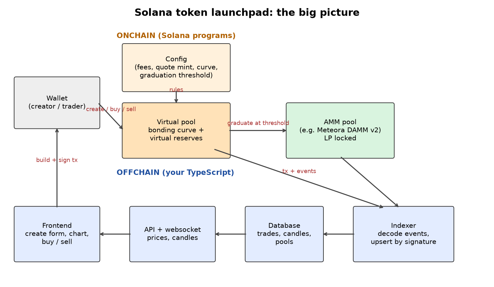

Part 1 · On-chain
Architecture: pump.fun vs Meteora DBC
Before we write a line of code, we look at how two real launchpads are put together, and then choose the shape of our own clone.
1 Everyday analogy
Think of Mama Nkechi, who starts selling a brand-new snack at the market. She has no shop yet, so she sells from a stall with a price board. Every time someone buys, she moves the price up a little. Nobody has to bring stock to "make a market". The stall always buys and sells at the price on the board.
When she has sold enough, she graduates. She closes the stall and moves everything (her takings and her leftover stock) into a proper shop on the main road, where anyone can trade with anyone.
A token launchpad works the same way. The stall is the bonding curve, the price board is the curve math, and the proper shop is an AMM pool on a DEX.
2 Design question
You are building a launchpad clone. Two real designs exist:
- pump.fun style: one program, one global settings account, and every coin gets the same curve.
- Meteora DBC style: a partner (such as a launch platform) first creates a config with its own curve and fee settings. Each token then gets a virtual pool that uses that config.
Which shape should your first clone use, and what is the trade-off?
Try to answer on your own first, in plain English. A gut answer is fine.
Reveal answer
Start with the pump.fun shape. One global settings account and one curve account per coin is the smallest thing that works. It is easy to test and easy to index.
The Meteora DBC shape is more flexible, because many launch platforms can share one program, each with its own curve and fees. But you pay for that with more accounts, more settings to validate, and more ways to misconfigure a launch.
Our clone General pattern / our clone starts with one global config and keeps the curve code in a separate pure module, so a "config per partner" can be added later without rewriting the math.
3 Simple explanation
The three phases every launchpad has
- Create: a new mint and its curve state are created. The curve owns all the tokens that are for sale.
- Trade on the curve: users buy and sell against the program. The program is the only counterparty, and the price comes from a formula.
- Graduate and migrate: when a target is hit, the curve stops trading and its liquidity moves into a normal AMM pool.
pump.fun Real: pump.fun docs
- Coins are "instantly tradeable on a bonding curve without having to seed liquidity". When a coin hits its target, the liquidity "is migrated to PumpSwap (an AMM on Solana)".
- There is one
Globalaccount (PDA from seeds["global"]) that holds the default curve numbers and the fee. - Each coin has its own bonding-curve account (PDA from
["bonding-curve", mint]). - Its instructions include
create,buy,sellandmigrate.
Meteora Dynamic Bonding Curve (DBC) Real: Meteora DBC docs/repo
- Flow: a partner config (a keypair account, not a PDA), then a virtual pool per token, then migration to DAMM v2.
- A pool graduates when its quote reserve reaches
migration_quote_threshold. - After migration, LP is locked for the partner and the token creator, who can then claim fees from it.
Raydium LaunchLab Real: Raydium docs
Raydium's LaunchLab follows the same three phases. Its docs describe launches moving "from bonding curve trading to Raydium pool liquidity", with creator fees continuing after graduation to a CPMM pool. In class we read its public SDK rather than its program internals.
4 The math
Every design in this book uses one idea: constant product. If is the SOL side and is the token side, a trade must keep
Buying tokens adds SOL ( goes up), so has to go down to keep the same. Fewer tokens left means a higher price. That is the price board going up after every sale.
The spot price is simply the ratio
Chapter 2 makes this exact, using real pump.fun numbers.
5 TypeScript code
Here are the shapes of the pieces in our clone General pattern / our clone. Field names follow pump.fun's public bonding-curve account where one exists.
// The three phases of a coin's life
export type Phase = "Trading" | "Complete" | "Migrated";
// Global settings (pump.fun keeps similar defaults in its Global account)
export interface GlobalConfig {
initialVirtualTokenReserves: bigint; // 1_073_000_000_000_000n
initialVirtualSolReserves: bigint; // 30_000_000_000n lamports
initialRealTokenReserves: bigint; // 793_100_000_000_000n
tokenTotalSupply: bigint; // 1_000_000_000_000_000n
feeBasisPoints: bigint; // 100n = 1%
}
// One per coin (pump.fun: PDA from ["bonding-curve", mint])
export interface BondingCurve {
virtualTokenReserves: bigint;
virtualSolReserves: bigint;
realTokenReserves: bigint;
realSolReserves: bigint;
tokenTotalSupply: bigint;
complete: boolean;
}6 TypeScript exercise
Write a function nextPhase(phase, event) that only allows legal moves: Trading → Complete (on "sold out") and Complete → Migrated (on "migrate"). Anything else should return the same phase and must not throw. Why is "Migrated + migrate → Migrated" exactly the behaviour we want? (Hint: chapter 4.)
type Phase = "Trading" | "Complete" | "Migrated";
type PhaseEvent = "soldOut" | "migrate";
export function nextPhase(phase: Phase, event: PhaseEvent): Phase {
// TODO
return phase;
}Show a solution
export function nextPhase(phase: Phase, event: PhaseEvent): Phase {
if (phase === "Trading" && event === "soldOut") return "Complete";
if (phase === "Complete" && event === "migrate") return "Migrated";
return phase; // includes Migrated + migrate: a harmless no-op (idempotent)
}7 Architecture diagram

